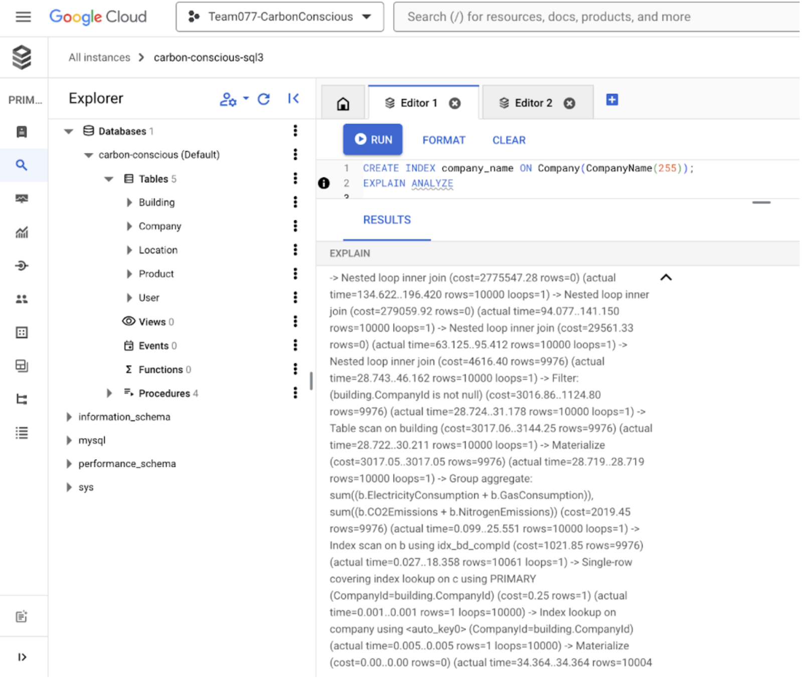

ML Model: Python, Pandas, scikit-learn, NumPy, NLTK, Gensim, Pytorch
App Development: Flask, Node.js, React.js, Figma
The Concept
As someone who had many restrictions and health issues that made it hard to find recipes that met my dietary needs, I envisioned Allerg-Eat as a tool to alleviate the problem. Allerg-Eat is a recipe recommendation system tailored specifically for individuals with food allergies and dietary restrictions.
My model takes in a user's allergy information and cravings, which are then used to create a personalized ranked list of recipes. Using fundamental techniques in ML and NLP, Allerg-Eat filters through thousands of recipes to ensure that you can find meals that are both safe and delicious.
Data Formatting
- Loading Data: I loaded the raw recipe data from a JSON file using pd.read_json. The data is then transposed to switch rows and columns for proper alignment.
- Resetting Index: I reset the index to have a proper integer-based index and drop the first column which might contain irrelevant data.
- Cleaning Ingredients List: The ingredient_parser function processes each ingredient list to remove stop words, measurement words, accents, and converts them to their base forms for consistency.
- Ingredient Parsing: The function processes each ingredient string by splitting, filtering, and normalizing text, and removes unnecessary words to prepare a clean list of ingredients.
Ingredient Grouping
In this step, the ingredients are grouped and processed to understand their semantic relationships.
- Grouping Ingredients: Here, I joined the cleaned ingredient lists into single strings for each recipe. This helps in further processing steps where each recipe is treated as a document for natural language processing.
I used the Word2Vec model to generate vector representations of the ingredients.
- Training Word2Vec: The Word2Vec model is trained on the cleaned ingredient lists. I used the Continuous Bag of Words (CBOW) approach to understand the context of each ingredient and create vector representations.
- Average Vector Calculation: This function calculates the average vector representation for each recipe by averaging the vectors of its ingredients.
Similarity Ranking
I used cosine similarity to rank the recipes based on user preferences.
- Cosine Similarity Calculation: This function calculates the cosine similarity between two vectors to determine how similar they are.
- Ranking Function: This function ranks the recipes based on the user's allergies and cravings. It adjusts the reference vector according to the user's cravings and calculates the cosine similarity for each recipe. The similarity score is then adjusted based on the presence of allergens.
In Progress
I am currently building the CBOW (Continuous Bag of Words) approach to the Word2Vec model from scratch using a neural network. The data preparation involves cleaning ingredient lists, creating a corpus of sentences, and generating CBOW pairs. The CBOWModel class defines a neural network with an embedding layer and a linear layer. The vocabulary is created from unique words in the ingredient list, and sequences of words are converted into indices. The model is initialized with the vocabulary size and embedding size, and trained using CrossEntropyLoss and SGD optimizer. After training, the word embeddings are extracted and stored in a dictionary for further use.
Next Steps
- User Feedback Integration: Incorporate user feedback to refine the recommendation algorithm and improve the accuracy of the ranked recipes.
- Personalized Meal Plans: Introduce personalized meal plans that consider not just allergies and cravings but also nutritional requirements and dietary goals.
- Mobile App Development: Develop a mobile application to make Allerg-Eat accessible on-the-go, providing real-time recipe recommendations based on user location and preferences.
Database: SQL, MySQL, GCP, BigQuery
App Development: HTML/CSS, JavaScript, Express.js, VSCode, Git, Figma
The Concept
Over the course of 6 months, my team worked on developing our web application CarbonConscious, aiming to analyze sustainability practices in corporate settings and provide valuable feedback to our users. Our app allows users to input the emissions data for either their specific building or their company as a whole and then are given a comprehensive examination of their environmental contribution. Through the use of graph visuals and interactive elements, CarbonConscious empowers businesses to make informed decisions toward a greener future.
Database Organization
- We started by creating a Unified Modeling Language (UML) diagram to map out the relationships between various entities in our data. This was the blueprint for our database schema, allowing us to visualize how the data interacts within our system.
- Relational schema representation:

CompanyId: INT [PK]
CompanyName: VARCHAR(30)
LocationId: INT
ElectricityConsumption: DECIMAL
GasConsumption: DECIMAL
RenewableConsumption: DECIMAL
CO2Emissions: DECIMAL
NitrogenEmissions: DECIMAL
BuildingId: INT [PK]
CompanyId: INT [FK to Company.CompanyId]
LocationId: INT [FK to Location.LocationId]
ElectricityConsumption: DECIMAL
GasConsumption: DECIMAL
RenewableConsumption: DECIMAL
CO2Emissions: DECIMAL
NitrogenEmissions: DECIMAL
username: VARCHAR(30) [PK]
password: VARCHAR(30)
CompanyId: INT [FK to Company.CompanyId]
LocationId: INT [PK]
Temperature: INT
ProductId: INT [PK]
ProductName: VARCHAR(30)
Department: VARCHAR(20)
CompanyId: INT [FK to Company.CompanyId]
Quantity: INT
Hosting the Database
- To host our database, we leveraged the capabilities of Google Cloud Platform (GCP). This provided us with a reliable, scalable, and secure environment for our application. Specifically, we created our own Virtual Machine (VM) on GCP, which allowed us to have full control over the configuration and management of our database.
- We chose MySQL as our database management system due to its robustness and widespread adoption. MySQL's features, such as ACID compliance and support for complex queries, made it an ideal choice for handling our emissions data. By hosting MySQL on a GCP VM, we could easily scale our resources based on demand, ensuring that our application remained performant even as the volume of data grew.
- To set up the tables in MySQL, we used Data Definition Language (DDL) code:

CREATE TABLE Company ( CompanyId INT UNSIGNED, CompanyName VARCHAR(30), LocationId INT, ElectricityConsumption INT, GasConsumption INT, RenewableConsumption INT, CO2Emissions INT, NitrogenEmissions INT, PRIMARY KEY(CompanyId))
CREATE TABLE Building ( BuildingId INT, CompanyId INT UNSIGNED, ElectricityConsumption INT, GasConsumption INT, RenewableConsumption INT, CO2Emissions INT, NitrogenEmissions INT, PRIMARY KEY(BuildingId), FOREIGN KEY(CompanyId) REFERENCES Company(CompanyId), FOREIGN KEY(LocationId) REFERENCES Location(LocationId))
CREATE TABLE User ( username VARCHAR(30), password VARCHAR(30), CompanyId int UNSIGNED, PRIMARY KEY (username), FOREIGN KEY (CompanyId) REFERENCES Company (CompanyId))
CREATE TABLE Location ( LocationId INT, Temperature INT, PRIMARY KEY (LocationId))
CREATE TABLE Product ( ProductId INT, ProductName VARCHAR(30), Quantity INT, Department VARCHAR(20), CompanyId INT UNSIGNED, PRIMARY KEY(ProductId), FOREIGN KEY(CompanyId) REFERENCES Company(CompanyId))
Planning: Possible Queries and Indexing
We wrote four possible advanced queries that could be useful for the purpose of our application:
- Compare company emission contribution in the same location
- Calculates total emissions for each company within a specific location and determines each company's percentage contribution to the total emissions of that location.
- Helps identify the most significant contributors to emissions within a shared area.
- Total Emissions
- Calculates total energy consumption and total emissions for each company by combining data from both company-wide and building-specific records.
- Provides a comprehensive view of each company's overall environmental impact.
- Energy Ranking
- Calculates an energy rating for each company by taking into account both negative factors (such as energy consumption and emissions) and positive factors (such as renewable energy usage).
- Ranks companies based on their overall environmental performance.
- Compare post-feedback
- Compares the total energy consumption and emissions of companies before and after implementing feedback from CarbonConscious.
- Identifies if there has been any reduction in consumption or emissions post-feedback.
In order to enhance the performance of our queries, particularly the post-feedback query, we implemented indexing strategies. This optimization process involved several iterations, where we analyzed the cost impacts of different indexing approaches using the EXPLAIN ANALYZE command.
A look into MySQL indexing:
To enhance the functionality and maintainability of our database, we incorporated code for triggers and stored procedures → Automate routine tasks and encapsulate complex queries, leading to better performance and easier management.
Implementation
Backend
- Language: JavaScript
- Framework: Express.js
- Handle server-side operations: managing user authentication, processing user requests, and interacting with the database
Frontend
- Language: HTML/CSS
- Tools: Figma (design), VSCode (development)
- Create structure of the application, with stylistic elements to enhance user interaction and experience
SQL Integration
- Integrated the total emissions and energy ranking SQL queries into the backend code to interact with our database
Functionalities
By combining a robust backend with an intuitive frontend, CarbonConscious offers a comprehensive solution for businesses to monitor and enhance their sustainability practices.
- Log In Page
- Users can log in with their credentials to access the application.
- Secure authentication mechanisms are implemented to protect user data.
- Change username/password
- Users have the option to update their username or password.
- This feature ensures that users can maintain the security of their accounts.
- Delete account
- Users can delete their accounts if they no longer wish to use the service.
- This action removes all associated data from the database, ensuring privacy and compliance with data protection regulations.
- Data Entry for Emissions
- Users can input emissions data for either their specific building or their entire company.
- This data is stored in the database and used for analysis.
- Results Page
- Displays the total emissions for the user's building or company.
- Shows the user's performance through graph visuals.
- Provides suggestions for reducing emissions based on the data entered.
App Development: HTML/CSS, JavaScript, Three.JS, VSCode, Git, Figma
Planning
- Figma: Utilized for designing wireframes and creating visual representations of the website's layout and structure.
- Google Docs: Used for planning the creative elements of the text, such as font, size, style, and layout.
Implementation Elements
- HTML: Provided the structure of the web pages, including elements such as webpage layout, interactive images, etc.
- CSS: Applied styles to HTML elements, including colors, fonts, and responsive design.
- JavaScript + Three.JS: Implemented custom functionalities and transitions to add interactivity and dynamic behavior to the website.
Home Page
- HTML/CSS: Uses basic design elements to transform the mockup into an interactive webpage, with cursor functionalities, drop-down functionalities, and a clear color scheme.
- Three.JS: Implemented a dynamic animation of particles using Three.js. The scene features a rotating group of 1500 semi-transparent spheres, creating a visually engaging but simple background effect.
- Mock-up vs. Actual: Because of the inclusion of the background animation, I chose to simplify the layout and design elements to ensure that viewers are not overwhelmed. The final design prioritizes a cleaner look to complement the dynamic background to maintain readability and the user's experience.
- To-do: make the home page more professional and eye-catching by adding interactive hover functionalities using JS.
Figma Mockup:

Actual:

About Page
- To ensure a smooth transition from page #1 to page #2 (and page #2 to page #3), I integrated JavaScript seamlessly into the HTML files. This implementation enables sliding-out and fading-out transitions, enhancing the user experience with fluid navigation. These transitions not only provide a visually appealing pathway to the next page but also ensure that the shift between pages with contrasting colors remains gentle and easy on the eyes.
Figma Mockup:


Actual:


- While the original mockup of the "About" section was initially much simpler, I wanted to incorporate my personality into this section to emphasize the information provided about myself. The silhouette showcases a blend of design skills while also representing two of my interests in my fields of study: the philosophic study of the mind and the use of neural networks in ML.
- I also chose to images to represent my technical skills rather than simply listing them in tables. This approach is more visually appealing and faster to digest the breadth of my knowledge.
Figma Mockup:

Actual:


Project Page
- This page showcases different projects, each with its own description and implementation details. Each project is presented with an image and a brief overview, and clicking on it scrolls to the corresponding details. The page incorporates smooth scrolling functionality using JavaScript to enhance the user experience. Additionally, the design employs CSS for styling and layout, ensuring a visually appealing presentation.
Figma Mockup of Overview:


Actual Overview:

Figma Mockup of Project Descriptions:


Actual Project Descriptions:


Other Features
- I integrated a navigation bar with links to the home page (“Home”), projects page (“Projects”), and the About Me page (“About”) to allow users to easily navigate between different sections of the website, enhancing user accessibility and usability.
- I also attached my resume, providing users with direct access to detailed and more concise information about my qualifications, experience, and skills, enhancing their understanding of my professional background and expertise.
Takeaways
- Trial and error to figure out what is visually appealing and how to translate rough sketches into functional web pages
- Clear planning and creative stimulation are necessary for web page development
- Growing familiarity with HTML/CSS and JavaScript and the many uses in UI/UX spaces